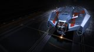

Рабочая вместимость под руду
~64 т
Type-6 Transporter — самый доступный средний корпус, из которого можно сделать полноценный добывающий корабль. Помещаются очиститель, контроллеры дронов, грузовые стеллажи и небольшой щит. Корпус стоит меньше миллиона кредитов и садится на средние площадки в большинстве систем с кольцами. Но оружейных креплений всего два, оба малые: полный комплект из трёх инструментов для подрыва не влезет, да и трюм невелик. На нём хорошо и недорого обучаться лазерной добыче, а когда пойдут деньги, стоит пересесть.

Оценка пригодности корабля от 1 до 100 учитывает его полностью улучшенную сборку и сравнивает её с остальными кораблями в этой роли. Подробнее: как оцениваются корабли.
В добыче можно неплохо заработать даже на дешёвом корпусе. Type-6 — самый доступный средний корабль, который вмещает рабочий комплект. Восемь дополнительных отсеков принимают очиститель, контроллер разведчиков, контроллеры сборщиков, подробный сканер поверхности и пару грузовых стеллажей. Щит 3-го класса прикрывает на уязвимые минуты работы у астероида. Средняя площадка даёт доступ почти ко всем системам с кольцами, а хорошая дальность с грузом позволяет добраться до богатых зон в нетронутых кольцах.
Ограничение — всего два малых оружейных крепления. На них помещаются добывающий лазер и абразивный бластер для лазерной и поверхностной добычи. Но полный комплект из установки сейсмических зарядов, подповерхностной ракеты и абразивного бластера для эффективного подрыва ядер не поместится. Трюм тоже невелик, лишь малая доля вместимости Type-8 или большого добытчика. Назначение Type-6 простое: недорого начать, освоить процесс и накопить на специализированный корабль.
Бюджетная лазерная добыча: первый рабочий добытчик, обучение разведке и переработке, работа в доступных зонах пейнита, платины и трития со средней площадкой и накопление на Type-8 или большой добывающий корабль.
Четыре причины, по которым Type-6 подходит для бюджетной добычи:
На двух малых креплениях не собрать полный набор для подрыва. Это прежде всего лазерный добытчик. Рабочий трюм примерно на 64 т вмещает лишь долю груза Type-8. С базовым щитом около 90 МДж и без настоящего оружия от пиратов лучше уходить, а не сражаться. Корабль приносит деньги, пока ты учишься, но стоит пересесть, как только хватит на специализированный корпус.
Средний корабль дешевле миллиона кредитов, без требований к рангу, вмещает полноценный комплект для лазерной добычи. Но рабочий трюм около 64 т и два малых крепления делают его вариантом для старта.
62/100 — итог по критериям, важным для добытчика. У каждого критерия есть вес (доля от 100). Баллы зависят от результата корабля в сравнении с остальными. Сумма баллов даёт итоговую оценку.
| Критерий | Баллы | Почему столько |
|---|---|---|
| Рабочая вместимость под руду | 18/35 | Максимум около 110 т груза, а с очистителем и контроллерами — около 64 т руды. Работать можно, но у Type-8 около 406 т, у Cutter около 794 т, у Type-9 около 790 т. Это нижняя планка среди средних добытчиков. |
| Крепления и отсеки под инструменты | 15/25 | Восемь дополнительных отсеков (5·5·4·4·3·2·2·1) вмещают очиститель, контроллеры разведчиков и сборщиков, сканер поверхности и грузовые стеллажи. На двух малых креплениях помещаются только лазер и абразивный бластер, не весь комплект из сейсмической установки, подповерхностной ракеты и бластера. Внешних креплений три. |
| Живучесть | 7/15 | Базовый щит около 90 МДж, после улучшений около 300 МДж с двухконтурным щитом 3C и усилителем «Усиленная конструкция». Настоящего оружия нет, от перехватов приходится уходить. Самооборона лёгкого корпуса минимальна. |
| Размер площадки и доступ к станциям | 13/15 | Средняя площадка даёт доступ почти ко всем системам с кольцами и позволяет садиться на аванпостах. Ранг и разрешение не нужны, а с грузом дальности FSD хватает до богатых зон в нетронутых кольцах. Больше мест доступны лишь малым кораблям. |
| Цена и специализация | 9/10 | Корпус около 867 тыс. кредитов, полностью улучшенная сборка около 6 млн, дешевле голого Python. Ранг не нужен. Это самый дешёвый способ получить рабочий добывающий комплект, но специализированные корабли сильно лучше, когда на них хватает денег. |
| Взвешенный итог | 62/100 | Сумма совпадает с общей оценкой корабля в этой роли. |
Вес критериев отражает приоритеты авторов руководства, а не игровую формулу. Длинные полосы показывают, в чём корабль набрал больше всего возможных баллов, короткие — где он их потерял. Подробнее: как оцениваются корабли.
Таблицы сравнивают корабли именно для добычии разделяют их по размеру посадочной площадки. Столбец Макс. груз показывает максимальный тоннаж руды. Оценка пригодности выставляется по шкале от 1 до 100, как на остальных страницах.
| Корабль | Класс | Макс. груз | Плюсы и минусы | Оценка |
|---|---|---|---|---|
| Type-11 Prospector | Средняя | ~288 т | Выше оценка; оснащение; доступ к площадкамВыгода | 95 |
| Python | Средняя | ~294 т | Выше оценка; оснащение; живучестьТрюм | 90 |
| Krait Mk II | Средняя | ~230 т | Выше оценка; живучесть; доступ к площадкамТрюм | 84 |
| Type-8 Transporter | Средняя | ~406 т | Выше оценка; трюм; оснащениеЖивучесть | 84 |
| Krait Phantom | Средняя | ~190 т | Выше оценка; доступ к площадкам; оснащениеЖивучесть | 70 |
| Corsair | Средняя | ~318 т | Выше оценка; живучесть; доступ к площадкамВыгода | 68 |
| Keelback | Средняя | ~98 т | Выше оценка; живучесть; доступ к площадкамТрюм | 68 |
| Asp Explorer | Средняя | ~130 т | Выше оценка; оснащение; доступ к площадкамЖивучесть | 64 |
| Type-6 Transporter этот | Средняя | ~114 т | — корабль, с которым сравниваем | 62 |
Из девяти оценённых кораблей для средних площадок лидирует Type-11 Prospector (95). Все конкуренты в этой таблице садятся на те же площадки: с них удобно начать сравнение.
| Корабль | Класс | Макс. груз | Плюсы и минусы | Оценка |
|---|---|---|---|---|
| Imperial Cutter | Большая | ~794 т | Выше оценка; оснащение; живучестьПосадочная площадка | 92 |
| Type-9 Heavy | Большая | ~790 т | Выше оценка; трюм; выгодаЖивучесть | 90 |
| Anaconda | Большая | ~470 т | Выше оценка; оснащение; живучестьПосадочная площадка | 86 |
| Type-7 Transporter | Большая | ~310 т | Выше оценка; выгода; оснащениеЖивучесть | 78 |
| Panther Clipper Mk II | Большая | ~662 т | Выше оценка; трюм; оснащениеВыгода | 77 |
| Imperial Clipper | Большая | ~250 т | Выше оценка; выгода; живучестьПосадочная площадка | 70 |
| Type-10 Defender | Большая | ~534 т | Выше оценка; живучесть; оснащениеВыгода | 70 |
| Federal Corvette | Большая | ~618 т | Выше оценка; живучесть; трюмВыгода | 64 |
| Caspian Explorer | Большая | ~434 т | Оснащение; живучестьНиже оценка; выгода | 60 |
Из девяти оценённых кораблей для больших площадок лидирует Imperial Cutter (92). У них больше площадки и бюджеты, а по характеристикам они превосходят малый корпус. Но это другой класс.
| Корабль | Класс | Макс. груз | Плюсы и минусы | Оценка |
|---|---|---|---|---|
| Cobra Mk V | Малая | ~110 т | Доступ к площадкам; оснащениеНиже оценка; трюм | 58 |
| Cobra Mk III | Малая | ~64 т | Доступ к площадкам; выгодаНиже оценка; живучесть | 52 |
| Adder | Малая | ~30 т | Доступ к площадкам; выгодаНиже оценка; живучесть | 48 |
Из трёх оценённых кораблей для малых площадок лидирует Cobra Mk V (58). У малых корпусов ниже цены и меньше площадки. По показателям они уступают Cutter, но это другой класс.
Type-6 стоит около 867 тыс. кредитов, ранг не нужен. Рабочий комплект с инструментами, очистителем, контроллерами разведчиков и сборщиков, грузовыми стеллажами и небольшим щитом обходится примерно в 6 млн. Это дешевле голого корпуса Python .
Главное — низкая цена. Заработок на Type-6 помогает быстрее накопить на Type-8 или большой добывающий корабль. Для максимального объёма за рейс или полноценной защиты специализированный добытчик намного лучше. Но начать дешевле не получится.
Около 6 млн кредитов за рабочий лазерный комплект. На нём можно освоить разведку и переработку и накопить на специализированный корабль.
Бюджетная лазерная сборка с небольшим щитом, чтобы пережить нападение пирата и успеть уйти. Начальная требует только покупок. Класс A — рабочая база. Инженерные улучшения повышают дальность, мобильность и прочность щита. Добывающим инструментам они почти ничего не дают.
| Отсек | Начальная · только покупка | Класс A · без улучшений | С инженерными улучшениями | Примечания |
|---|---|---|---|---|
| Оружейные крепления | ||||
| Малое крепление 1 | 1D Добывающий лазер (неподвижный) | 1D Добывающий лазер (неподвижный) | (нет чертежа улучшения) | Основной добывающий лазер откалывает руду от астероида. добывающие лазеры доступны только в одном классе и не выигрывают от инженерных улучшений. |
| Малое крепление 2 | — | 1D Абразивный бластер (неподвижный) | (нет чертежа улучшения) | Абразивный бластер сбивает поверхностные залежи для сборщиков. Оставь штатным, как и остальные добывающие инструменты. |
| Внешние крепления | ||||
| Крепление 1 | — | 0A Анализатор импульсных волн | (нет чертежа улучшения) | Анализатор импульсных волн класса A подсвечивает богатые астероиды в кольце. Чертежей улучшения нет. |
| Крепление 2 | — | 0A Усилитель щита | G5 Усиленная конструкция + Суперконденсаторы | Усилитель с «Усиленной конструкцией» заметно увеличивает прочность малого двухконтурного щита в МДж. Самый дешёвый способ повысить живучесть. |
| Крепление 3 | — | 0I Теплоотводная катапульта | G1 Дополнительный боезапас (без экспериментального эффекта) | Необязательно. Дополнительный боезапас даёт больше теплоотводов. Они снимают нагрев при скрытном ходе и в паузах использования эффекта «Тепловая вентиляция». |
| Основные модули | ||||
| Обшивка | Лёгкий сплав | Лёгкий сплав | Облегчение 5-й ступени (без экспериментального эффекта) | |
| Энергетическая установка | 3E Энергетическая установка | 3A Энергетическая установка | G5 Низкое выделение тепла + Рассеивание тепла | Энергоустановка 3-го класса в исполнении A одновременно питает лазеры, дроны и щит. «Низкое выделение тепла» помогает не перегреваться во время долгой добычи. |
| Маневровые двигатели | 4E Маневровые двигатели | 4A Маневровые двигатели | G5 Грязная настройка двигателей + Форсированные двигатели | Класс A маневровые двигатели с улучшением «Грязной настройкой» помогают выравниваться у астероидов и уходить от перехвата. |
| Рамочно-сместительный двигатель (FSD) | 4E Рамочно-сместительный двигатель (FSD) | 4A Рамочно-сместительный двигатель (FSD) | G5 Увеличенная дальность + Управление массой | Класс A Двигатель FSD с улучшением «Увеличенной дальностью» позволяет долететь до богатых зон в отдалённых нетронутых кольцах и вернуть руду домой. |
| Система жизнеобеспечения | 2E Система жизнеобеспечения | 2D Система жизнеобеспечения | G5 Облегчение (без экспериментального эффекта) | Класс D уменьшает массу, «Облегчение» экономит ещё немного — системы жизнеобеспечения нет экспериментального эффекта. |
| Распределитель энергии | 3E Распределитель энергии | 3A Распределитель энергии | G3 Упор на двигатели + Снижение массы | Сначала поставь класс A. лазеры и дроны требуют много энергии. «Упор на двигатели» сохраняет запас для форсажа при отходе. |
| Сенсоры | 2E Сенсоры | 2D Сенсоры | G5 Облегчение (без экспериментального эффекта) | Класс D и «Облегчение» уменьшают массу. Для добычи дальние сенсоры не нужны. |
| Топливный бак | 4C Топливный бак | 4C Топливный бак | (нет чертежа улучшения) | Штатный бак 4-го класса. Вместимость фиксирована, инженерных улучшений нет. |
| Дополнительные отсеки | ||||
| Размер 5 | 5E Грузовой стеллаж | 5E Грузовой стеллаж | (нет чертежа улучшения) | Необязательный отсек под груз. Пригодится специализированным грузовикам. У грузовых стеллажей нет инженерных улучшений. |
| Размер 5 | — | 5E Грузовой стеллаж | (нет чертежа улучшения) | Необязательный отсек под груз. Пригодится специализированным грузовикам. У грузовых стеллажей нет инженерных улучшений. |
| Размер 4 | — | 4A Очиститель | G5 Защищённый (без экспериментального эффекта) | Необязательно. «Защищённый» повышает прочность очистителя. Этот модуль перерабатывает добытые фрагменты. |
| Размер 4 | — | 3A Контроллер дронов-сборщиков | G5 Облегчение (без экспериментального эффекта) | Необязательно. «Облегчение» уменьшает массу контроллера. Он запускает дронов-сборщиков. |
| Размер 3 | — | 3C Генератор двухконтурного щита | G5 Укреплённый + Быстрая зарядка | Двухконтурный щит 3-го класса быстро восстанавливается под огнём. «Укреплённый» даёт максимум прочности, «Быстрая зарядка» ускоряет восстановление. |
| Размер 2 | — | 1A Контроллер дронов-разведчиков | G5 Облегчение (без экспериментального эффекта) | Необязательно. «Облегчение» уменьшает массу контроллера. Он запускает дронов-разведчиков. |
| Размер 2 | — | 1A Контроллер дронов-сборщиков | G5 Облегчение (без экспериментального эффекта) | Необязательно. «Облегчение» уменьшает массу контроллера. Он запускает дронов-сборщиков. |
| Размер 1 | — | 1I Подробный сканер поверхности | G5 Увеличенный радиус сканирования зондов (без экспериментального эффекта) | Необязательно. «Увеличенный радиус сканирования зондов» расширяет охват каждого зонда. Сканер составляет карты планет для получения данных. |
| Планировщики и экспорт | ||||
| Открыть в Coriolis | открыть | открыть | открыть | Открывает сборку на coriolis.io. |
| Открыть в EDSY | открыть | открыть | открыть | Открывает сборку на edsy.org. |
| Скопировать SLEF | Копирует выбранную сборку в формате экспорта корабельного оснащения (SLEF). | |||
На двух малых креплениях помещаются добывающий лазер и абразивный бластер. Это простая лазерная сборка. Анализатор импульсных волн находит богатые астероиды, очиститель и дроны выполняют свою работу, а двухконтурный щит 3-го класса прикрывает корабль. Чтобы попробовать подрыв ядер, можно заменить один инструмент сейсмической установкой, но с двумя креплениями придётся пожертвовать другим инструментом.
Начальная сборка намеренно простая. Купи корпус (около 867 тыс. кредитов) со штатными основными модулями класса E и поставь единственное, без чего нельзя добывать: добывающий лазер 1D на малое крепление и один грузовой стеллаж 5E под руду. Обшивку оставь штатной, из лёгкого сплава. Она идёт с корпусом бесплатно и подходит добытчику, которому важна дальность прыжка.
Остальное пока пустует. Второе крепление (абразивный бластер), анализатор импульсных волн, очиститель, оба контроллера дронов, двухконтурный щит 3-го класса и подробный сканер поверхности появятся при переходе на сборку класса A.
Поначалу такой добытчик почти ничего не зарабатывает. Цель — недорого получить корпус и основной лазер, затем перевести энергоустановку и распределитель на класс A, чтобы весь комплект работал без перебоев.
На этапе класса A добавь абразивный бластер, анализатор импульсных волн 0A, очиститель 4A, контроллер разведчиков 1A, контроллеры сборщиков 1A и 3A и подробный сканер поверхности 1I. Основные модули улучшай в таком порядке:
Обшивку оставь штатной, из лёгкого сплава. Не трать деньги и массу на обшивку: важнее дальность, щит и руда. Военную обшивку здесь не ставим.
Добывающие лазеры и дроны сильно нагружают небольшие энергоустановку и распределитель 3-го класса. Сначала переведи оба на класс A, чтобы комплект работал без перебоев. Затем добавь двигатель FSD для дальности и небольшой щит для защиты.
Инженерных работ немного: улучшается корабль, а не инструменты. На самих добывающих инструментах инженерия почти ничего не даёт. Felicity Farseer на максимальном уровне улучшает Двигатель FSD. Закрепи чертежи для удалённого применения с 1-й по 5-ю ступень.
| Модуль | Чертёж | Экспериментальный эффект | Инженер |
|---|---|---|---|
| Рамочно-сместительный двигатель (FSD) (4) | Увеличенная дальность (5-я ступень) | Управление массой | Felicity Farseer |
| Распределитель энергии (3) | Упор на двигатели (3-я ступень) | — | The Dweller |
| Энергетическая установка (3) | Низкое выделение тепла (5-я ступень) | Рассеивание тепла | Hera Tani |
| Двухконтурный щит (3) | Укреплённый (5-я ступень) | Быстрая зарядка | Lei Cheung |
| Маневровые двигатели (4) | Грязная настройка двигателей (5-я ступень) | Форсированные двигатели | Professor Palin / Mel Brandon |
| Усилитель щита | Усиленная конструкция (5-я ступень) | Суперконденсаторы | Didi Vatermann |
| Обшивка | Облегчение (5-я ступень) | — | Selene Jean |
Немного: на средних модулях нужны лишь чертежи дальности, мобильности и защиты. Добывающие инструменты остаются штатными, оружейные улучшения не требуются. Если запасы полные, материалы собирать не нужно. При необходимости уточни расход для каждого чертежа.
Примерные показатели для трёх вариантов. Точный результат зависит от оснащения:
| Показатель | Начальная | Класс A | С инженерными улучшениями |
|---|---|---|---|
| Руда за рейс (т) | ~32 | ~56 | ~64 |
| Выживает при нападении пиратов | с трудом | уходит | уходит уверенно |
| Щит (МДж) | нет | ~140 | ~300 |
| Обшивка | Облегчение | Облегчение | Облегчение (5-я ступень) |
| Крепления для инструментов | 2 малых | 2 малых | 2 малых |
| Посадочная площадка | средняя | средняя | средняя |
После улучшений Type-6 может добыть лазером около 64 т руды и прикрывается скромным щитом. Это недорогой первый добытчик, способный долететь до богатых зон и привезти груз домой. Инженерные улучшения экономят массу: «Облегчение» 5-й ступени на штатной обшивке из лёгкого сплава и «Снижение массы» на распределителе энергиисохраняют дальность, нужную для полёта к богатым астероидам. Трюм остаётся небольшим, а два крепления ограничивают набор инструментов. Задача корабля — недорого заработать на более серьёзного добытчика.
Подойдёт любое доступное нетронутое металлическое или ледяное кольцо. До систем добычи легко долететь от домашней станции. Пока учишься, выбирай тихие кольца, разведывай и перерабатывай руду. При пиратском перехвате уходи гиперпрыжком.
Type-6 Transporter — самый дешёвый рабочий добытчик: очиститель, дроны, грузовые стеллажи и небольшой щит на средней площадке, при цене корпуса меньше миллиона кредитов. Два малых крепления ограничивают его лазерной добычей, трюм небольшой, и от пиратов он уходит, а не сражается. Поэтому оценка — 62; выше малых кораблей, но далеко позади полноценных средних добытчиков и больших рудовозов. Как первый корабль, на котором можно освоить добычу и накопить на следующий, он хорош. Как окончательный выбор — нет.
Авторы оригинала сверили данные со следующими источниками.